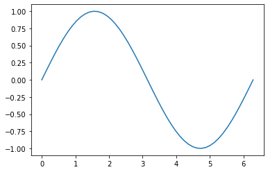
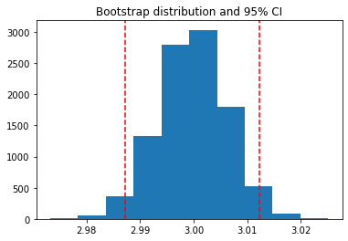

Test Stuff
from myst_nb import glue
import pandas as pd
from ipywidgets import interact, interactive, fixed, interact_manual, Layout, Box, VBox, HBox, Button, Output, Tab
# import ipywidgets as widgets
from IPython.display import display, display_html
import numpy as np
import math
import matplotlib.pyplot as plt
import seaborn as sns
from scipy.stats import norm
import markdown
from IPython.core.display import display, HTML
---------------------------------------------------------------------------
ModuleNotFoundError Traceback (most recent call last)
Cell In[1], line 10
8 import numpy as np
9 import math
---> 10 import matplotlib.pyplot as plt
11 import seaborn as sns
12 from scipy.stats import norm
ModuleNotFoundError: No module named 'matplotlib'
# %matplotlib notebook
from ipywidgets import *
import numpy as np
import matplotlib.pyplot as plt
x = np.linspace(0, 2 * np.pi)
fig = plt.figure()
ax = fig.add_subplot(1, 1, 1)
line, = ax.plot(x, np.sin(x))
plt.show()
def update(w = 1.0):
line.set_ydata(np.sin(w * x))
fig.canvas.draw()
interact(update, align = 'center')

<function __main__.update(w=1.0)>
%matplotlib notebook
import numpy as np
import matplotlib.pyplot as plt
import mpl_interactions.ipyplot as iplt
x = np.linspace(0, 2 * np.pi, 1000)
fig = plt.figure()
ax = fig.add_subplot(1, 1, 1)
def f(x, w):
return np.sin(w * x)
controls = iplt.plot(x, f, w=(1, 10))
from IPython.display import display
import numpy as np
from ipywidgets import *
import matplotlib.pyplot as plt
def plot_oscillation(wavelength, magnitude, phase):
x = np.linspace(-20, 20, 1000)
plt.plot(x, magnitude*np.sin((x+phase)/(wavelength/(2*np.pi))))
plt.show()
w = dict(wavelength = FloatSlider(2*np.pi, min=0.1, max=20, step=0.1, description='wavelength'),
magnitude = FloatSlider(1, min=0.1, max=10, step=0.1, description='magnitude'),
phase = FloatSlider(0, min=0, max=10, step=0.1, description='phase'))
output = interactive_output(plot_oscillation, w)
box = HBox([VBox([*w.values()]), output])
display(box)
import numpy as np
from bqplot import pyplot as plt
from IPython.display import display
from ipywidgets import interactive, fixed, IntSlider, HBox, Layout
%matplotlib inline
plt.figure(min_aspect_ratio=1, max_aspect_ratio=1)
xs = np.random.randint(0, 5000 + 1, 100)
ys = np.random.randint(0, 5000 + 1, 100)
scat = plt.scatter(xs, ys)
def rotate(theta, xs, ys):
new_xs = xs * np.cos(np.deg2rad(theta)) - ys * np.sin(np.deg2rad(theta))
new_xs -= new_xs.min()
new_ys = xs * np.sin(np.deg2rad(theta)) + ys * np.cos(np.deg2rad(theta))
new_ys -= new_ys.min()
return new_xs, new_ys
def update_plot(theta, xs, ys):
new_xs, new_ys = rotate(theta, xs, ys)
scat.x, scat.y = new_xs, new_ys
w = interactive(update_plot,
theta=IntSlider(min=-180, max=180, step=5,value=0, orientation='vertical'),
xs=fixed(xs),
ys=fixed(ys))
box_layout = Layout(display='flex', flex_flow='row', justify_content='center', align_items='center')
display(HBox([plt.current_figure(), w], layout=box_layout))
from IPython.display import display, clear_output
from ipywidgets import interact, fixed, IntSlider, HBox, Layout, Output, VBox
import numpy as np
import matplotlib.pyplot as plt
%matplotlib inline
def rotate(theta, xs, ys):
new_xs = xs * np.cos(np.deg2rad(theta)) - ys * np.sin(np.deg2rad(theta))
new_xs -= new_xs.min()
new_ys = xs * np.sin(np.deg2rad(theta)) + ys * np.cos(np.deg2rad(theta))
new_ys -= new_ys.min()
return new_xs, new_ys
out = Output(layout={'width': '300px', 'height': '300px'})
def update_plot(change):
theta = change['new'] # new slider value
with out:
clear_output(wait=True)
fig = plt.figure(figsize=(4,4))
ax = fig.add_subplot(111)
scat, = ax.plot(xs, ys, 'kx', markersize=1)
ax.grid(which='both', color='.25', lw=.1)
ax.set_aspect('equal'), ax.set_title('Rotate')
new_xs, new_ys = rotate(theta, xs, ys)
scat.set_xdata(new_xs), scat.set_ydata(new_ys)
ax.set_xlim(new_xs.min() - 500, new_xs.max() + 500)
ax.set_ylim(new_ys.min() - 500, new_ys.max() + 500)
plt.show()
xs = np.random.randint(0, 5000, 50)
ys = np.random.randint(0, 5000, 50)
slider = IntSlider(min=-180, max=180, step=5, value=0, orientation='vertical')
slider.observe(update_plot, 'value')
update_plot({'new': slider.value})
display(HBox([out, slider]))
Test Stuff#
my_variable = "here is some text!"
glue("cool_text", my_variable)
'here is some text!'
from ipywidgets import interact, interactive, fixed, interact_manual, Layout, Box, VBox, HBox, Button, Output, Tab
import markdown
from IPython.core.display import display, HTML
import pandas as pd
import matplotlib.pyplot as plt
url = "https://raw.githubusercontent.com/johnmyleswhite/ML_for_Hackers/master/02-Exploration/data/01_heights_weights_genders.csv"
df = pd.read_csv(url)
df_sample = df.loc[df['Gender']== 'Male',['Gender','Height']].sample(50, random_state=12, ignore_index=True);
df_sample
dfht = df[['Height']]
# Plot
pop_ht = np.random.normal(size=50,loc=66.36756, scale=3.84) #a normal dist adj to Mean and Std
out1 = Output()
df1 = Output()
df2 = Output()
cap = Output()
with df1:
display(df_sample.describe().loc[['mean','std']].style.set_table_attributes("style='display:inline'").set_caption('Sample Heights of 50 Adult Males'))
with df2:
display(dfht.describe().loc[['mean','std']].style.set_table_attributes("style='display:inline'").set_caption('Population of Adult Heights'))
with out1:
fig, ax = plt.subplots();
sns.kdeplot(pop_ht,color="r", shade = True, label="Adults heights");
sns.histplot(df_sample, x = 'Height', stat = 'probability', kde = True, color="dodgerblue", label="Sample Men heights",bins = 6);
plt.axvline(x=68.929605, color='b', dashes=(3, 3), zorder=0,linewidth=1);
plt.axvline(x=66.367560, color='red', dashes=(3, 3), zorder=0,linewidth=1);
plt.xlim(55,80)
plt.ylim(0,.38)
plt.legend()
plt.show()
# with cap:
# markdown.markdown("""
# {glue:figure} ht-distfig
# :name: square-fig1
# newComparing the distributions of the sample (blue) to the population (red) heights.
# """)
box_layout = Layout(display='flex',
flex_flow='row',
align_items = 'center',
justify_content = 'center',
border='solid',
width='100%')
box_images = Box(children = [df1, df2, out1],layout=box_layout)
box_images
# from ipywidgets import interact, FloatSlider, interactive, fixed
# import matplotlib.patches as mpatches
# from bqplot import pyplot as plt
# from matplotlib.collections import PatchCollection
# import numpy as np
# from bqplot import pyplot as plt
# from IPython.display import display
# from ipywidgets import interactive, fixed, IntSlider, FloatSlider, HBox, Layout
# style="Simple,head_length=28,head_width=36,tail_width=20"
# arrow = arrow = mpatches.FancyArrowPatch((1,1), (3,3), arrowstyle=style)
# plt.gca().add_patch(arrow)
# plt.plot([1, 3], [1,3], "rx", markersize=15)
# plt.xlim(0, 6)
# plt.ylim(0, 6)
# plt.show()
from ipywidgets import interact, FloatSlider, interactive, fixed
import matplotlib.patches as mpatches
from matplotlib.collections import PatchCollection
#imports
import pandas as pd
from ipywidgets import interact, interactive, fixed, interact_manual, Layout, Box, VBox, HBox, Button, Output, Tab
# import ipywidgets as widgets
from IPython.display import display, display_html
import numpy as np
import math
import matplotlib.pyplot as plt
import seaborn as sns
from scipy.stats import norm
import markdown
from IPython.core.display import display, HTML
from myst_nb import glue
out = Output()
mu = 66.4
sigma = 3.84
sample_size = 50,
upper_cond= 66.4+4*3.84
#draws pdf of smampling means)
def update_plot(change):
lower_cond = change['new'] # new slider value
mu = 66.4
sigma = 3.84
sample_size = 50.0,
upper_cond= 66.4+4*3.84
sigma_n = sigma/(np.sqrt(sample_size)[0]) #std dev of sampling means
with out:
# sigma_n = sigma #std dev of sampling means
clear_output(wait=True)
x = np.linspace(-4*sigma_n + mu, 4*sigma_n + mu, 1000) #x-axis values
y = norm.pdf(x, mu, sigma_n) # (x-values, location, scale) #norm function
#plot
fig, axs = plt.subplots()
plt.plot(x, y)
plt.fill_between(x, y, 0, where = (x > lower_cond) & (x < upper_cond),color = 'pink')
plt.axvline(x=66.4, color='red', dashes=(3, 3), zorder=0,linewidth=1)
plt.axvline(x=lower_cond, color='blue', dashes=(3, 3), zorder=0,linewidth=1)
plt.xlabel('Density')
plt.ylabel('Height')
plt.text(lower_cond+.1,.6, r'$\bar{}=${}'.format(r'x',round(lower_cond,2)), fontsize=12)
prob = 1-norm.cdf(lower_cond, loc=mu, scale=sigma_n)
plt.text(67.5,.3, r'prob.={}'.format(round(prob,3)), fontsize=12)
##arrows
style="Simple,head_length=15,head_width=15,tail_width=3"
arrow = arrow = mpatches.FancyArrowPatch((68,.275), ((lower_cond+68)/2,
norm.pdf((lower_cond+68.75)/2, mu, sigma_n)/2),
arrowstyle=style)
plt.gca().add_patch(arrow)
# display(fig)
plt.show()
style ={'description_width': 'initial'};
interact_layout = Layout(display='flex',
# flex_flow='column', #default for VBox
align_items = 'center',
# align_content = 'center',
justify_content = 'center',
# border = 'solid', #centers widget
)
# slider_layout = Layout(
# border='solid',
# justify_content = 'center',
# align_items = 'center',
# align_content = 'center',
# )
slider = FloatSlider(description='Sample mean',
style = style,
min=64.5, max=68.5,
step = .5, value=67,
# layout = slider_layout
)
# box_images = VBox(children = [w.children[0], w.children[1]],layout=box_layout)
# box_images
# display(w.children[0],justify_content = 'center')
# display(w.children[1],justify_content = 'center')
# display(w)
slider_box = Box([slider] , layout = interact_layout)
fig_box = Box([out] , layout = interact_layout)
slider.observe(update_plot, 'value')
update_plot({'new': slider.value})
fig_and_slider = VBox(children = [slider_box, fig_box], layout=interact_layout)
display(fig_and_slider)
# display(VBox([w.children[0], w.children[1]]))
# display(VBox([plt.current_figure(), w]))
from IPython.display import display, clear_output
import ipywidgets as ipy
import matplotlib.pyplot as plt
import numpy as np
# setup figure
n = 10
out = ipy.Output()
# show random mesh
def update(idx):
with out:
clear_output()
fig, ax = plt.subplots(figsize = (5,5))
h = ax.imshow(np.random.rand(n, n))
h.set_data(np.random.rand(n, n))
fig.canvas.flush_events()
fig.canvas.draw()
plt.show()
slider = ipy.IntSlider(min = 0, max = 10)
widget = ipy.interactive(update, idx = slider)
layout = ipy.Layout(
# display = 'flex',
# flex_flow = 'row',
# justify_content = 'space-between',
# align_items = 'center',
# justify_content = 'center'
)
widgets = ipy.VBox(children=(slider, out), layout = layout)
display(widgets)
# import numpy as np
# from bqplot import pyplot as plt
# from IPython.display import display
# from ipywidgets import interactive, fixed, IntSlider, HBox, Layout, Box
# plt.figure(min_aspect_ratio=1, max_aspect_ratio=1)
# xs = np.random.randint(0, 5000 + 1, 100)
# ys = np.random.randint(0, 5000 + 1, 100)
# scat = plt.scatter(xs, ys)
# def rotate(theta, xs, ys):
# new_xs = xs * np.cos(np.deg2rad(theta)) - ys * np.sin(np.deg2rad(theta))
# new_xs -= new_xs.min()
# new_ys = xs * np.sin(np.deg2rad(theta)) + ys * np.cos(np.deg2rad(theta))
# new_ys -= new_ys.min()
# return new_xs, new_ys
# def update_plot(theta, xs, ys):
# new_xs, new_ys = rotate(theta, xs, ys)
# scat.x, scat.y = new_xs, new_ys
# w = interactive(update_plot,
# theta=IntSlider(min=-180, max=180, step=5,value=0, orientation='vertical'),
# xs=fixed(xs),
# ys=fixed(ys))
# box_layout = Layout(display='flex', justify_content='center', align_items='center')
# display(HBox([plt.current_figure(), w], layout=box_layout))
from IPython.display import display, clear_output
from ipywidgets import interact, fixed, IntSlider, HBox, Layout, Output, VBox
import numpy as np
import matplotlib.pyplot as plt
%matplotlib inline
def rotate(theta, xs, ys):
new_xs = xs * np.cos(np.deg2rad(theta)) - ys * np.sin(np.deg2rad(theta))
new_xs -= new_xs.min()
new_ys = xs * np.sin(np.deg2rad(theta)) + ys * np.cos(np.deg2rad(theta))
new_ys -= new_ys.min()
return new_xs, new_ys
out = Output(layout={'width': '300px', 'height': '300px'})
def update_plot(change):
theta = change['new'] # new slider value
with out:
clear_output(wait=True)
fig = plt.figure(figsize=(4,4))
ax = fig.add_subplot(111)
scat, = ax.plot(xs, ys, 'kx', markersize=1)
ax.grid(which='both', color='.25', lw=.1)
ax.set_aspect('equal'), ax.set_title('Rotate')
new_xs, new_ys = rotate(theta, xs, ys)
scat.set_xdata(new_xs), scat.set_ydata(new_ys)
ax.set_xlim(new_xs.min() - 500, new_xs.max() + 500)
ax.set_ylim(new_ys.min() - 500, new_ys.max() + 500)
plt.show()
xs = np.random.randint(0, 5000, 50)
ys = np.random.randint(0, 5000, 50)
slider = IntSlider(min=-180, max=180, step=5, value=0, orientation='vertical')
slider.observe(update_plot, 'value')
update_plot({'new': slider.value})
display(HBox([out, slider]))
# %matplotlib notebook
%matplotlib inline
from ipywidgets import interact, FloatSlider, interactive, fixed
import matplotlib.patches as mpatches
from matplotlib.collections import PatchCollection
# style="Simple,head_length=28,head_width=36,tail_width=20"
# arrow = arrow = mpatches.FancyArrowPatch((1,1), (3,3), arrowstyle=style)
# plt.gca().add_patch(arrow)
# plt.plot([1, 3], [1,3], "rx", markersize=15)
# plt.xlim(0, 6)
# plt.ylim(0, 6)
# plt.show()
#draws pdf of smampling means)
def draw_pdf_smeans(mu, sigma, sample_size, lower_cond, upper_cond):
sigma_n = sigma/(math.sqrt(sample_size)) #std dev of sampling means
x = np.linspace(-4*sigma_n + mu, 4*sigma_n + mu, 1000) #x-axis values
y = norm.pdf(x, mu, sigma_n) # (x-values, location, scale) #norm function
#plot
fig, axs = plt.subplots()
plt.plot(x, y)
plt.fill_between(x, y, 0, where = (x > lower_cond) & (x < upper_cond),color = 'pink')
plt.axvline(x=66.4, color='red', dashes=(3, 3), zorder=0,linewidth=1)
plt.axvline(x=lower_cond, color='blue', dashes=(3, 3), zorder=0,linewidth=1)
plt.xlabel('Density')
plt.ylabel('Height')
plt.text(lower_cond+.1,.6, r'$\bar{}=${}'.format(r'x',round(lower_cond,2)), fontsize=12)
prob = 1-norm.cdf(lower_cond, loc=mu, scale=sigma_n)
plt.text(67.5,.3, r'prob.={}'.format(round(prob,3)), fontsize=12)
##arrows
style="Simple,head_length=15,head_width=15,tail_width=3"
arrow = arrow = mpatches.FancyArrowPatch((68,.275), ((lower_cond+68)/2,
norm.pdf((lower_cond+68.75)/2, mu, sigma_n)/2),
arrowstyle=style)
plt.gca().add_patch(arrow)
plt.show()
## Generate our user interface.
# slider = widgets.FloatSlider(description='Sample mean',
# style = style,
# min=64.5, max=68.5,
# step = 0.1, value=67)
style ={'description_width': 'initial'};
interact_layout = Layout(display='flex',
align = 'center',
border='solid'
)
interactive(draw_pdf_smeans,
mu = fixed(66.4),
sigma = fixed(3.84),
sample_size = fixed(50),
upper_cond= fixed(66.4+4*3.84),
lower_cond=FloatSlider(description='Sample mean',
style = style,
min=64.5, max=68.5,
step = 0.1, value=67
),
);
# display(VBox([w.children[0],w.children[1]]))
#https://stackoverflow.com/questions/45464424/how-to-change-the-default-position-of-a-ipywidget-slider-to-the-side-of-a-matplo
# display(VBox([w.children[0],w.children[1]]))
# Simulate some data and bootstrap the mean of the data
import numpy as np
import pandas as pd
import matplotlib.pyplot as plt
n_points = 10000
n_boots = 1000
mean, sd = (3, .2)
data = sd*np.random.randn(n_points) + mean
bootstrap_indices = np.random.randint(0, n_points, n_points*n_boots).reshape((n_boots, n_points))
# Calculate the mean of a bunch of random samples
means = data[bootstrap_indices].mean(0)
# Calculate the 95% confidence interval for the mean
clo, chi = np.percentile(means, [2.5, 97.5])
# Store the values in our notebook
glue("boot_mean", means.mean())
glue("boot_clo", clo)
glue("boot_chi", chi)
2.9998712948836377
2.987185818843306
3.012286299119277
from ipywidgets import interact, interactive, fixed, interact_manual, Layout, Box, VBox, HBox, Button, Output, Tab
import markdown
from IPython.core.display import display, HTML
%matplotlib inline
fig1 = Output()
cap = Output()
with fig1:
fig, ax = plt.subplots()
ax.hist(means)
for ln in [clo, chi]:
ax.axvline(ln, ls='--', c='r')
ax.set_title("Bootstrap distribution and 95% CI")
plt.show()
box_layout = Layout(display='flex',
flex_flow='row',
align_items = 'center',
justify_content = 'center',
border='solid',
width='100%')
box_images = Box(children = [fig1,fig1],layout=box_layout)
box_images

Fig. 1 Your caption goes here fox box#
# Calculate the mean of a bunch of random samples
means = data[bootstrap_indices].mean(0)
fig, ax = plt.subplots()
ax.hist(means)
for ln in [clo, chi]:
ax.axvline(ln, ls='--', c='r')
ax.set_title("Bootstrap distribution and 95% CI")
plt.show()

Fig. 2 caption fo image Your caption goes here#